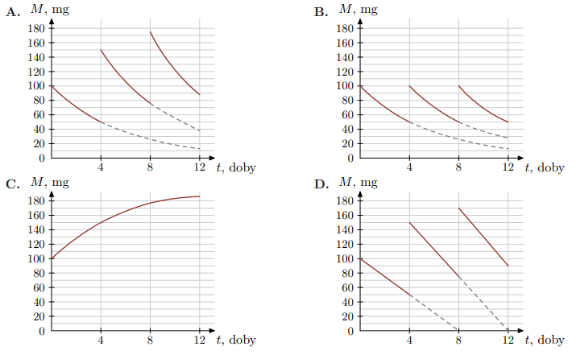
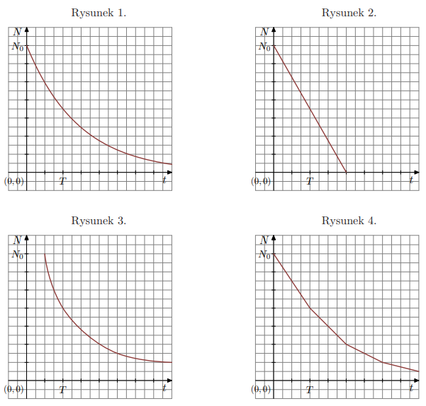

Czas \(T\) półtrwania leku w organizmie to czas, po którym masa leku w organizmie zmniejsza się o połowę –
po przyjęciu jednorazowej dawki.
Przyjmij, że po przyjęciu jednej dawki masa \(m\) leku w organizmie zmienia się w czasie zgodnie z zależnością
wykładniczą
\[
m(t) = m_0 \cdot \left(\tfrac{1}{2}\right)^{t/T}
\]
gdzie:
\(m_0\) – masa przyjętej dawki leku
\(T\) – czas półtrwania leku
\(t\) – czas liczony od momentu przyjęcia dawki.
W przypadku przyjęcia kilku(nastu) dawek powyższa zależność pozwala obliczyć, ile leku pozostało w danym
momencie w organizmie z każdej poprzednio przyjętej dawki. W ten sposób obliczone masy leku z przyjętych
poprzednich dawek sumują się i dają informację o całkowitej aktualnej masie leku w organizmie.
Pacjent otrzymuje co 4 dni o tej samej godzinie dawkę \(m_0 = 100\) mg leku L.
Czas półtrwania tego leku w organizmie jest równy \(T = 4\) doby.
Wykres zależności masy \(M\) leku L w organizmie tego pacjenta od czasu \(t\), liczonego od momentu przyjęcia
przez pacjenta pierwszej dawki, przedstawiono na rysunku:

Zad. 2
(grudzień 2023 - zad. 12)
Proces stygnięcia: \(T(x)=78\cdot2^{-0.05x}+22\). Temperatura po 20 minutach wynosi:
Obliczamy \(T(20)=78\cdot2^{-0.05\cdot20}+22=78\cdot2^{-1}+22=78\cdot\tfrac{1}{2}+22=39+22=61\).
Odp.: D.
Zad. 3
(maj 2020 - zad. 12)
Funkcja \(f(x)=4^{-x}+1\). Liczba \(f\!\left(\tfrac{1}{2}\right)\) jest równa:
\(f\!\left(\tfrac{1}{2}\right)=4^{-\tfrac{1}{2}}+1=\frac{1}{\sqrt{4}}+1=\tfrac{1}{2}+1=\tfrac{3}{2}\).
Odp.: B.
\(f(-3)=\left(\tfrac12\right)^{-3}=2^3=8\).
Odp.: D.
Zad. 5
(sierpień 2018 - zad. 8)
Dane: \(f(x)=3^x\) oraz \(g(x)=f(-x)\). Punkt wspólny wykresów f i g:
Punkt wspólny: szukamy \(x\) takiego, że \(3^x=3^{-x}\). To daje \(3^{2x}=1\Rightarrow2x=0\Rightarrow x=0\). Wtedy \(y=3^0=1\). Punkt: (0,1).
Odp.: C.
Zad. 6
(grudzień 2014 - zad. 5)
Dane: \(f(x)=-5^x+1\) oraz \(g(x)=5^x\). Ile punktów wspólnych wykresów tych funkcji?
Szukamy \(x\) z równania \(-5^x+1=5^x\Rightarrow 2\cdot5^x=1\Rightarrow5^x=\tfrac12\). Ma to dokładnie jedno rozwiązanie \(x=\log_5(\tfrac12)\).
Odp.: C.
Zad. 7
(maj 2014 - zad. 22)
Do wykresu funkcji \(y=-2^{\,x-2}\) należy punkt:
Dla punktu \(A=(2,-1)\): prawa strona \(y=-2^{2-2}=-2^0=-1\). Pasuje.
Odp.: A.
Zad. 8
(grudzień 2013 - zad. 5)
Funkcja \(f(x)=3^x\) przyjmuje wartość 6 dla argumentu:
Szukamy \(x\) takiego, że \(3^x=6\Rightarrow x=\log_3 6\).
Odp.: C.
Zad. 9
(informator CKE)
Czas \(T\) połowicznego rozpadu izotopu promieniotwórczego to czas, po którym liczba jąder danego izotopu
(a zatem i masa tego izotopu) zmniejsza się o połowę – tzn. połowa jąder danego izotopu przemienia się
w inne jądra.
Liczba jąder \(N(t)\) izotopu promieniotwórczego pozostających w próbce po czasie \(t\), licząc
od chwili \(t_0=0\), wyraża się zależnością wykładniczą:
\[
N(t) = N_0 \cdot \left(\tfrac{1}{2}\right)^{t/T}
\]
gdzie \(N_0\) jest liczbą jąder izotopu promieniotwórczego w chwili początkowej \(t_0=0\).
Na poniższych rysunkach 1.–4. przedstawiono wykresy różnych zależności:

Wykres zależności wykładniczej \(N(t)\) – opisanej we wstępie do zadania – przedstawiono na: